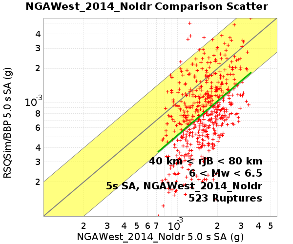
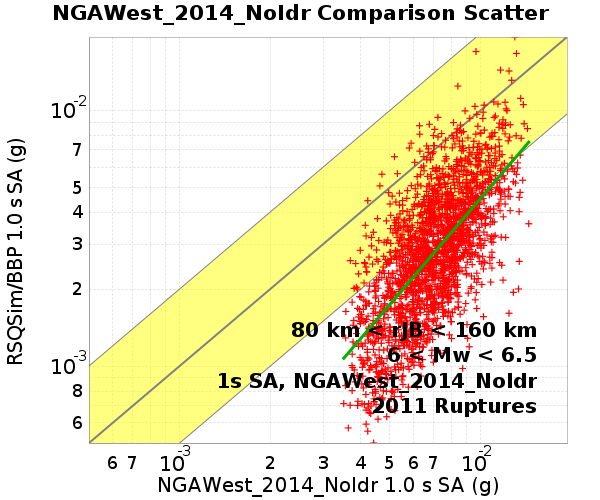
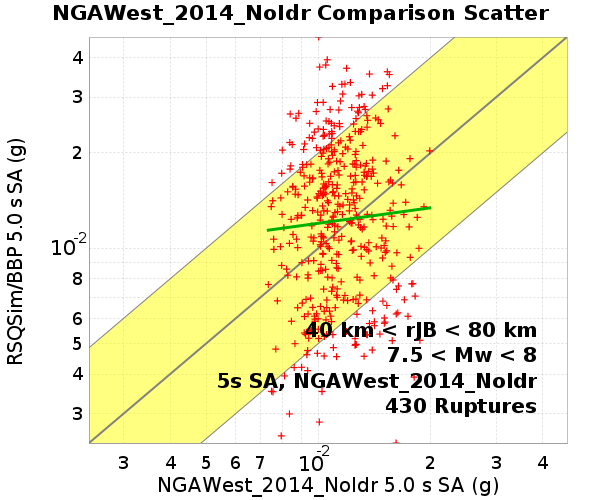
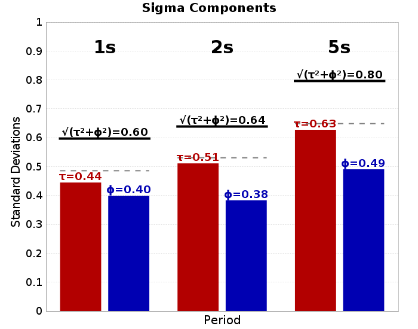
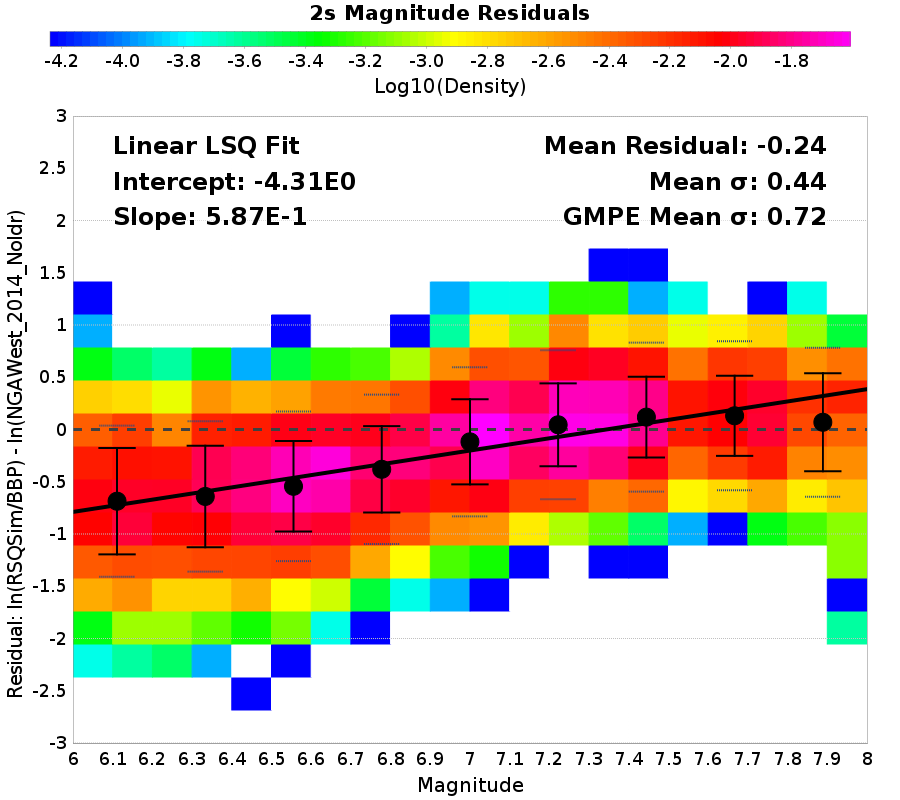

GMPE: NGAWest2 2014 Averaged No Idriss
Ruptures are binned by their moment magnitude (Mw) and the Joyner-Boore distance (rJB), the shortest horizontal distance from a site to the surface projection of the rupture surface
35 sites
| Name | Location | # Ruptures | Vs30 (m/s) | Z1.0 (km) | Z2.5 (km) |
|---|---|---|---|---|---|
| grid0 | 31.5, -117.0 | 304 (304 sims) | 863 | N/A | N/A |
| grid1 | 32.5, -118.0 | 415 (415 sims) | 863 | N/A | N/A |
| grid2 | 32.5, -117.0 | 981 (981 sims) | 863 | N/A | N/A |
| grid3 | 32.5, -116.0 | 862 (862 sims) | 863 | N/A | N/A |
| grid4 | 32.5, -115.0 | 692 (692 sims) | 863 | N/A | N/A |
| grid5 | 32.5, -114.0 | 542 (542 sims) | 863 | N/A | N/A |
| grid6 | 33.5, -120.0 | 250 (250 sims) | 863 | N/A | N/A |
| grid7 | 33.5, -119.0 | 461 (461 sims) | 863 | N/A | N/A |
| grid8 | 33.5, -118.0 | 707 (707 sims) | 863 | N/A | N/A |
| grid9 | 33.5, -117.0 | 1029 (1029 sims) | 863 | N/A | N/A |
| grid10 | 33.5, -116.0 | 996 (996 sims) | 863 | N/A | N/A |
| grid11 | 33.5, -115.0 | 830 (830 sims) | 863 | N/A | N/A |
| grid12 | 33.5, -114.0 | 583 (583 sims) | 863 | N/A | N/A |
| grid13 | 34.5, -121.0 | 232 (232 sims) | 863 | N/A | N/A |
| grid14 | 34.5, -120.0 | 296 (296 sims) | 863 | N/A | N/A |
| grid15 | 34.5, -119.0 | 477 (477 sims) | 863 | N/A | N/A |
| grid16 | 34.5, -118.0 | 704 (704 sims) | 863 | N/A | N/A |
| grid17 | 34.5, -117.0 | 871 (871 sims) | 863 | N/A | N/A |
| grid18 | 34.5, -116.0 | 818 (818 sims) | 863 | N/A | N/A |
| grid19 | 34.5, -115.0 | 602 (602 sims) | 863 | N/A | N/A |
| grid20 | 34.5, -114.0 | 8 (8 sims) | 863 | N/A | N/A |
| grid21 | 35.5, -121.0 | 725 (725 sims) | 863 | N/A | N/A |
| grid22 | 35.5, -120.0 | 734 (734 sims) | 863 | N/A | N/A |
| grid23 | 35.5, -119.0 | 466 (466 sims) | 863 | N/A | N/A |
| grid24 | 35.5, -118.0 | 597 (597 sims) | 863 | N/A | N/A |
| grid25 | 35.5, -117.0 | 594 (594 sims) | 863 | N/A | N/A |
| grid26 | 35.5, -116.0 | 472 (472 sims) | 863 | N/A | N/A |
| grid27 | 35.5, -115.0 | 48 (48 sims) | 863 | N/A | N/A |
| grid28 | 35.5, -114.0 | 0 (0 sims) | 863 | N/A | N/A |
| grid29 | 36.5, -119.0 | 458 (458 sims) | 863 | N/A | N/A |
| grid30 | 36.5, -118.0 | 159 (159 sims) | 863 | N/A | N/A |
| grid31 | 36.5, -117.0 | 134 (134 sims) | 863 | N/A | N/A |
| grid32 | 36.5, -116.0 | 99 (99 sims) | 863 | N/A | N/A |
| grid33 | 37.5, -118.0 | 84 (84 sims) | 863 | N/A | N/A |
| grid34 | 37.5, -117.0 | 90 (90 sims) | 863 | N/A | N/A |
1877 ruptures within 200 km of any site
553 Ruptures
Legend
| Distance Bin | 1 s | 2 s | 5 s |
|---|---|---|---|
| 0 km < rJB < 10 km | |||
| 10 km < rJB < 20 km | |||
| 20 km < rJB < 40 km | |||
| 40 km < rJB < 80 km |  | ||
| 80 km < rJB < 160 km |  | ||
| 160 km < rJB < 200 km |
These plots compare RSQSim/BBP to the full GMPE log-normal distributions. Each rupture's GMPE distribution is converted to a standard log-normal distribution, and the z-score is computed for each rupture:
z-score: (ln(RSQSim/BBP) - ln(GMPE-mean)) / GMPE-sigma
Legend
| 0 km < rJB < 10 km | 10 km < rJB < 20 km | 20 km < rJB < 40 km |
|---|---|---|
| ||
| 40 km < rJB < 80 km | 80 km < rJB < 160 km | 160 km < rJB < 200 km |
|
620 Ruptures
Legend
| Distance Bin | 1 s | 2 s | 5 s |
|---|---|---|---|
| 0 km < rJB < 10 km | |||
| 10 km < rJB < 20 km |  | ||
| 20 km < rJB < 40 km |  | ||
| 40 km < rJB < 80 km | |||
| 80 km < rJB < 160 km | |||
| 160 km < rJB < 200 km |  |
These plots compare RSQSim/BBP to the full GMPE log-normal distributions. Each rupture's GMPE distribution is converted to a standard log-normal distribution, and the z-score is computed for each rupture:
z-score: (ln(RSQSim/BBP) - ln(GMPE-mean)) / GMPE-sigma
Legend
| 0 km < rJB < 10 km | 10 km < rJB < 20 km | 20 km < rJB < 40 km |
|---|---|---|
 | ||
| 40 km < rJB < 80 km | 80 km < rJB < 160 km | 160 km < rJB < 200 km |
546 Ruptures
Legend
| Distance Bin | 1 s | 2 s | 5 s |
|---|---|---|---|
| 0 km < rJB < 10 km | |||
| 10 km < rJB < 20 km | |||
| 20 km < rJB < 40 km | |||
| 40 km < rJB < 80 km |  | ||
| 80 km < rJB < 160 km |  | ||
| 160 km < rJB < 200 km |
These plots compare RSQSim/BBP to the full GMPE log-normal distributions. Each rupture's GMPE distribution is converted to a standard log-normal distribution, and the z-score is computed for each rupture:
z-score: (ln(RSQSim/BBP) - ln(GMPE-mean)) / GMPE-sigma
Legend
| 0 km < rJB < 10 km | 10 km < rJB < 20 km | 20 km < rJB < 40 km |
|---|---|---|
| 40 km < rJB < 80 km | 80 km < rJB < 160 km | 160 km < rJB < 200 km |
 |
158 Ruptures
Legend
| Distance Bin | 1 s | 2 s | 5 s |
|---|---|---|---|
| 0 km < rJB < 10 km | |||
| 10 km < rJB < 20 km | |||
| 20 km < rJB < 40 km |  | ||
| 40 km < rJB < 80 km |  | ||
| 80 km < rJB < 160 km | |||
| 160 km < rJB < 200 km |
These plots compare RSQSim/BBP to the full GMPE log-normal distributions. Each rupture's GMPE distribution is converted to a standard log-normal distribution, and the z-score is computed for each rupture:
z-score: (ln(RSQSim/BBP) - ln(GMPE-mean)) / GMPE-sigma
Legend
| 0 km < rJB < 10 km | 10 km < rJB < 20 km | 20 km < rJB < 40 km |
|---|---|---|
| 40 km < rJB < 80 km | 80 km < rJB < 160 km | 160 km < rJB < 200 km |
z-score standard normal plots across all magnitudes/distances
z-score: (ln(RSQSim/BBP) - ln(GMPE-mean)) / GMPE-sigma
Legend
Residuals of simulation data (RSQSim/BBP) in log space relative to GMPE log-mean
Legend
GMPE Residuals use the following values, averaged among all ruptures, for all paremeters which are not varied. All other parameters set to GMPE defaults
| Name | Average Value |
|---|---|
| Magnitude | 6.93 |
| rRup | 129.1 |
| rJB | 129.01 |
| Vs30 | 863 |
| Z10 | � |
| Z25 | � |
Note: These are not yet corrected for covariance. Currently only useful for comparing relative phi and tau, not absolute values

Note: These are not yet corrected for covariance. Currently only useful for comparing relative phi and tau, not absolute values
Residuals shown here are first detrended according to the following magnitude & log-distance dependent average residuals
| 1s | 2s | 5s |
|---|---|---|
| 1 s | 2 s | 5 s |
|---|---|---|
 | ||
|  |
| 1 s | 2 s | 5 s |
|---|---|---|
| 1 s | 2 s | 5 s |
|---|---|---|